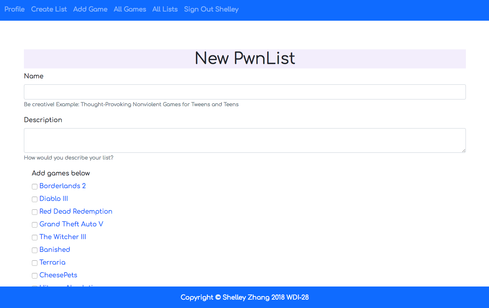
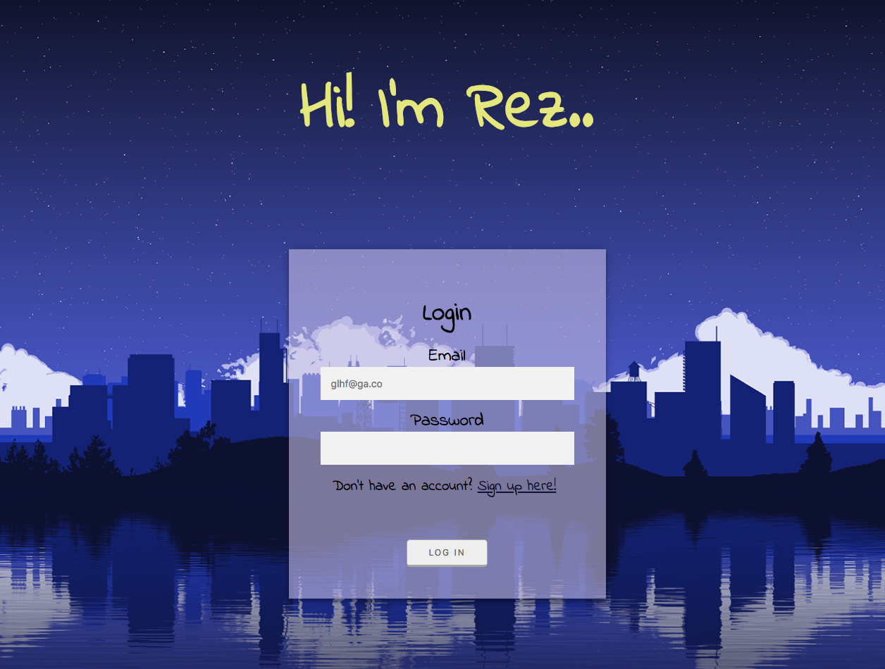
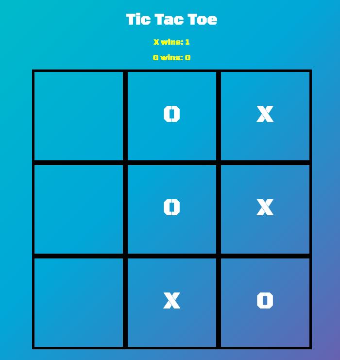

About
Hey there, welcome to my recently REVISED and AMPLIFIED web development portfolio! You may have seen this portfolio circulating the internet, most likely as a meme or gif, showcasing what NOT to do. Recently cancelled but suddenly self-aware, I invite you to parody, critique and analyse the shit out of this portfolio so that I can finally let go of an embarrasing but cute period of my life. The story of why I attended General Assembly's coding bootcamp to 'find my passion and purpose' is complicated. I didn't my find my passion OR my purpose, and it's a much longer, and deeper story than you think it is.
But what I DID find, was a sense of belonging. It was lovely being invited into General Assembly's wonderful community of diverse thinkers, dreamers and doers. Who genuinely want to see you succeed, flourish and grow. This portfolio, which you are unfortunately viewing, has been tragically neglected; littered with br and bad code. Yes, it looks like a bit of a joke, but it was an important milestone and a piece of comedic history that I'd like to keep live. Laugh all you want, but I'm emotionally attached to this piece of trash.
And as cheesy as this sounds, a class reunion is definitely in order.
- HTML5 & CSS3
- SASS
- Bootstrap
- JavaScript
- jQuery
- AJAX
- jQuery again, because you need it twice in 2021
- Git
- PostgreSQL
- Ruby on Rails
Key Skills
Projects
PwnLists 
New 3cool4me intro:
I'm proud of PwnLists. In addition to its legendary name, unique blue and white UI theme (thanks default bootstrap), and intricate db design, it had surprisingly strong user engagement. My classmates enthusiastically created their own lists, laughed at each other and created some more. Or maybe they were just entertaining me but I loved it. At it's core, it encouraged those who may be a little shy in class to bond over these silly gaming lists. It was nostalgic too - a beautiful moment I wish I had captured in a photo or video.
Old Intro:
A game collection web app where users can sign up for an account and create their own video game lists. PwnLists encourages users to be creative with their lists and tests gamers on how much they know about the game they love. I wanted to create one based on the Steam Awards poll that's held every year.
View the source code here.
//TODO: Meet You
New 3cool4me intro:
I am 76% sure this will be a feature in Bumble, despite its outdated chatroom functionality and exceedingly long trivia questions. Hire us, please?
Old Intro:
A dating site for singles in the tech industry. Users can browse profiles, like and unlike users and message potential matches.
View the source code here.
Rez 
New 3cool4me intro:
My therapist hates this app. And please, the anonymous poster creating cryptic articles about the upcoming rapture, STOP, you are scaring me and you need to tell me what date this is happening so I can make my preparations. Thank you.
Old Intro:
A blogging application that features a chatbot that will direct you to relevant posts written by other users based on what you say to the chatbot. Users can view other profiles, view public posts, view their own private posts, filter posts by categories, add comments to posts and of course, chat to Rez! Rez will be able to direct you to the public posts page with filters applied based on what the user chooses to input such as posts relating to depression/anxiety.
View the
source code here.
Tic Tac Toe 
New 3cool4me intro:
Bringing back 90s galaxy aesthetic before it was trending this year. Trendsetting at 29 years old is BOUND to garner me some type of respect.
Old Intro
The first game I've ever programmed. It's a simple two player game of TicTacToe built with HTML, CSS, Javascript and jQuery.
View the source code here.